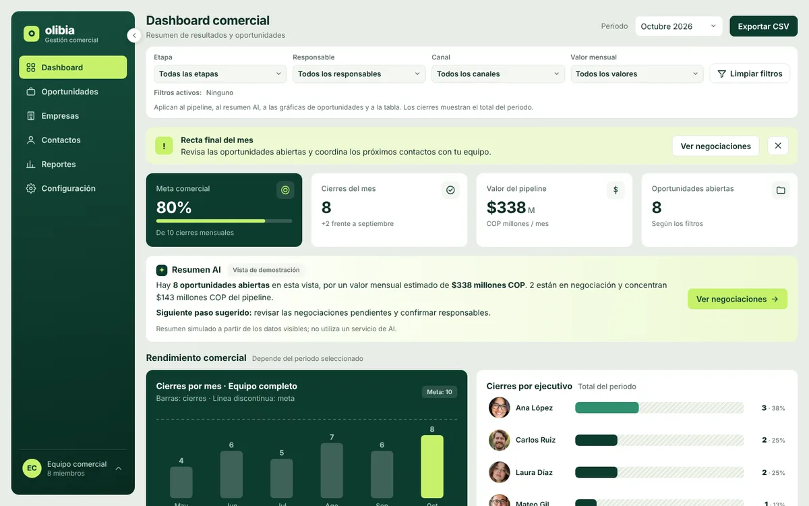
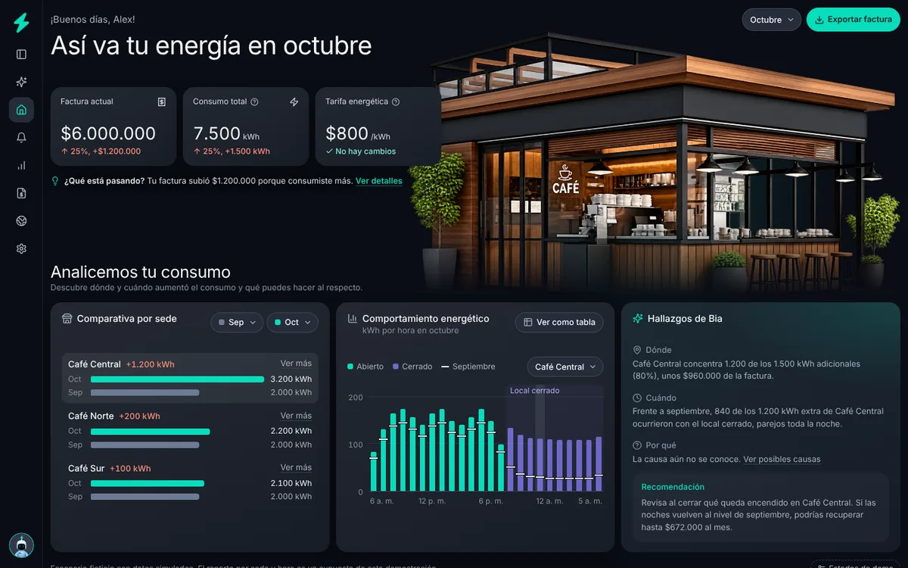

Prueba Design Engineer
Las dos tareas de la prueba para Bia y Olibia. Cada una abre su demo navegable, con datos simulados.

Tarea 1Olibia
Uplift radical de un dashboard comercial: nuevo diseño, estructura e interacción, con los mismos datos y acciones.
Abrir demo
Tarea 2Bia
Una sola página para que quien administra tres cafeterías entienda por qué subió su factura y qué hacer.
Abrir demoCódigo, instrucciones y decisiones en el repositorio de GitHub.